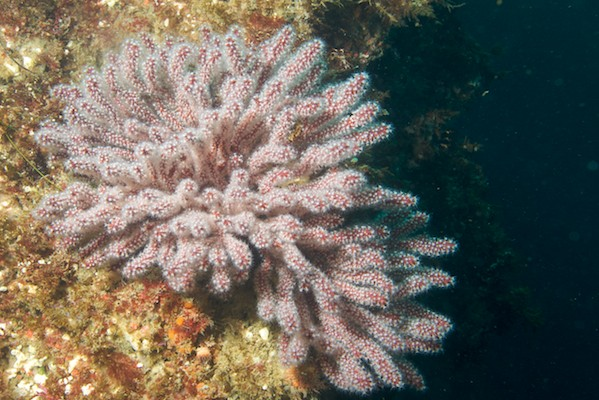

San Clemente Island
Index
Previous
8 of 35
Next
Rating: 2
Keywords: Channel Islands, Diving, San Clemente Island, Underwater Photography
Name: Channel Islands 2008-07-13 13-44-35
Date: 7/13/08 1:44:35 PM PDT
Aperture: ƒ/9
Shutter Speed: 1/125
Exposure Bias: -1 ev
ISO: ISO 200
Focal Length (35mm): 36.0mm
Focal Length: 24mm
Pixel Size: 2529 × 1688 (4.3 MP)
File Name: Channel Islands 2008-07-13 13-44-35.NEF
File Size: 15.98 MB
Camera Model: NIKON D200
Project Path: Channel Islands 2008-07
Copyright Notice: Copyright 2006, Gregg Kellogg
